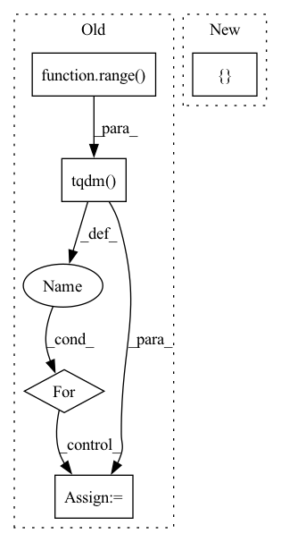

Pattern ID :36369
Before Change
// - eta -> η
// - pred_image_direction -> "direction pointingc to x_t"
// - pred_prev_image -> "x_t-1"
for t in tqdm.tqdm( reversed(range( num_inference_steps) ), total=num_inference_steps):
// 1. predict noise residual
with torch.no_grad():
residual = self.unet(image, inference_step_times[t])
if isinstance(residual, dict):
residual = residual["sample"]
// 2. predict previous mean of image x_t-1
pred_prev_image = self.noise_scheduler.step(residual, image, t, num_inference_steps, eta)
// 3. optionally sample variance
variance = 0
if eta > 0:
noise = torch.randn(image.shape, generator=generator).to(image.device)
variance = self.noise_scheduler.get_variance(t, num_inference_steps).sqrt() * eta * noise
// 4. set current image to prev_image: x_t -> x_t-1
image = pred_prev_image + varianceAfter Change
// do x_t -> x_t-1
image = self.scheduler.step(residual, t, image, eta)["prev_sample"]
return { "sample": image}
In pattern: SUPERPATTERN
Frequency: 3
Non-data size: 5
Instances Fragment ID: 102967362
Project Name: huggingface/diffusers
Commit Name: f448360bd0dfe5e28ee65ab2130532db91d5eafe
Time: 2022-07-15
Author: patrick.v.platen@gmail.com
File Name: src/diffusers/pipelines/ddim/pipeline_ddim.py
M Class Name: DDIMPipeline
N Class Name: DDIMPipeline
M Method Name: __call__(6)
N Method Name: __call__(6)
M Parent Class: DiffusionPipeline
N Parent Class: DiffusionPipeline
M File Name: src/diffusers/pipelines/ddim/pipeline_ddim.py
N File Name: src/diffusers/pipelines/ddim/pipeline_ddim.py
M Start Line: 35
M End Line: 77
N Start Line: 42
N End Line: 59
Before Change
// - eta -> η
// - pred_image_direction -> "direction pointingc to x_t"
// - pred_prev_image -> "x_t-1"
for t in tqdm.tqdm( reversed(range( num_inference_steps) ), total=num_inference_steps):
// 1. predict noise residual
timesteps = torch.tensor([inference_step_times[t]] * image.shape[0], device=torch_device)
pred_noise_t = self.unet(image, timesteps)
if isinstance(pred_noise_t, dict):
pred_noise_t = pred_noise_t["sample"]
// 2. predict previous mean of image x_t-1
pred_prev_image = self.noise_scheduler.step(pred_noise_t, image, t, num_inference_steps, eta)
// 3. optionally sample variance
variance = 0
if eta > 0:
noise = torch.randn(image.shape, generator=generator).to(image.device)
variance = self.noise_scheduler.get_variance(t, num_inference_steps).sqrt() * eta * noise
// 4. set current image to prev_image: x_t -> x_t-1
image = pred_prev_image + varianceAfter Change
// decode image with vae
image = self.vqvae.decode(image)
return { "sample": image}
Fragment ID: 102967367
Project Name: huggingface/diffusers
Commit Name: f448360bd0dfe5e28ee65ab2130532db91d5eafe
Time: 2022-07-15
Author: patrick.v.platen@gmail.com
File Name: src/diffusers/pipelines/latent_diffusion_uncond/pipeline_latent_diffusion_uncond.py
M Class Name: LatentDiffusionUncondPipeline
N Class Name: LatentDiffusionUncondPipeline
M Method Name: __call__(6)
N Method Name: __call__(6)
M Parent Class: DiffusionPipeline
N Parent Class: DiffusionPipeline
M File Name: src/diffusers/pipelines/latent_diffusion_uncond/pipeline_latent_diffusion_uncond.py
N File Name: src/diffusers/pipelines/latent_diffusion_uncond/pipeline_latent_diffusion_uncond.py
M Start Line: 31
M End Line: 71
N Start Line: 31
N End Line: 50
Before Change
with ArrowWriter(path=destination, stream=stream) as writer:
for source in logging.tqdm(sources, unit="sources", disable=disable):
pf = pa.parquet.ParquetFile(source)
for i in logging.tqdm(range( pf.num_row_groups) , unit="row_groups", leave=False, disable=disable) :
df = pf.read_row_group(i).to_pandas()
for col in df.columns:
df[col] = df[col].apply(json.loads)
reconstructed_table = pa.Table.from_pandas(df)
writer.write_table(reconstructed_table)
return destinationAfter Change
for source in logging.tqdm(sources, unit="sources", disable=disable):
parquet_file = pa.parquet.ParquetFile(source)
for record_batch in parquet_file.iter_batches():
pa_table = pa.Table.from_batches([ record_batch Fragment ID: 102967372
Project Name: huggingface/datasets
Commit Name: d557960e45f371d3b9b63377c6284e6f52115a74
Time: 2022-04-05
Author: 8515462+albertvillanova@users.noreply.github.com
File Name: src/datasets/arrow_writer.py
M Class Name: AnonimousClass
N Class Name: AnonimousClass
M Method Name: parquet_to_arrow(2)
N Method Name: parquet_to_arrow(2)
M Parent Class:
N Parent Class:
M File Name: src/datasets/arrow_writer.py
N File Name: src/datasets/arrow_writer.py
M Start Line: 643
M End Line: 648
N Start Line: 641
N End Line: 643